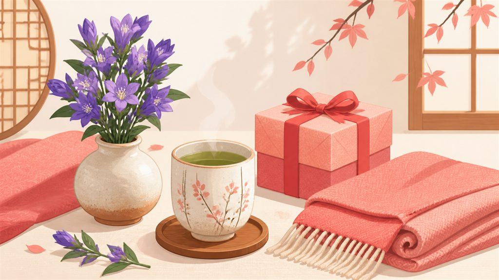

敬老の日ギフト2026。
祖父母が本当に喜ぶものと避けたいもの

2026年の敬老の日は9月21日（月・祝）。何歳から贈るかに決まりはありませんが、「孫からの気持ち」を軸にすると自然です。相場は3,000〜10,000円。高価さより「気にかけている」ことが伝わるかどうかで選びましょう。
本当に喜ばれるもの
- 孫の写真・声が添えられたもの — フォトフレーム、写真入りメッセージ付きのお菓子。どんな高級品よりこれが一番、というおじいちゃん・おばあちゃんは多いものです
- ちょっと贅沢な食べもの — 和菓子・果物・うなぎ・お寿司。「ふたりで食べきれる量」がポイント
- 上質な日用品 — 軽い羽織りもの、今治タオル、あたたかい靴下。「毎日使うものが少し良くなる」贈り物
- 花 — 敬老の日の定番はリンドウ。水やり不要のプリザーブドフラワーも人気
リンドウ・プリザーブドフラワー
3,000〜6,000円敬老の日の花といえば、長寿を願う紫のリンドウ。お世話の負担がないプリザーブドフラワーとお菓子のセットも定番です。
楽天で敬老の日の花ギフトを見る実は避けたいもの
- 「老い」を強調するもの — 杖・補聴器・老眼鏡などは、本人が望んだとき以外は避けるのが無難
- お茶だけの贈り物 — 弔事を連想する方もいます。贈るならお菓子と組み合わせて
- 櫛（くし） — 「苦」「死」に通じるとして気にする方も
- 硬いもの・量の多い食べもの — おかき・大袋のお菓子は食べきれないことがあります
💡 離れて暮らしている場合は、品物に電話やビデオ通話をセットにするのがいちばんのプレゼント。「届いた？」の一報が喜ばれます。
毎年の行事こそ、忘れない仕組みを
敬老の日・母の日・父の日・誕生日——毎年の贈りものは、つい直前になって慌てがち。アプリ「おくるね」は、季節の行事とお相手の誕生日をまとめてカウントダウンし、通知でお知らせします。去年何を贈ったかの記録も一目で確認できます。